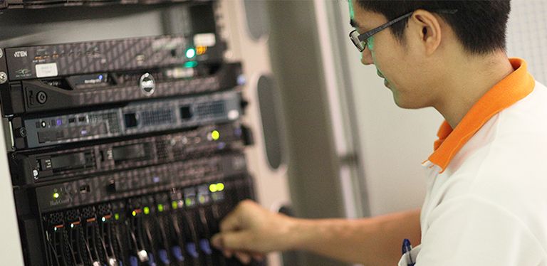

Same Page Different Stylesheets
This is a demonstration of how different stylesheets can change the layout of your HTML page.
You can see more information about the Master
programs at SIT from the links below:



Answer the following questions
- Q1
- Q2
- Q3
- Q4
- Q5
Ans-I use <link rel="stylesheet" href="style_4.css" /> to use style and text-decoration: none; to remove underline under link
Ans-I use <meta charset="utf-8>
I use <p> to answer the questions
I create 4 stylesheet and link to another one
I reduce photo size from 30% to 20%